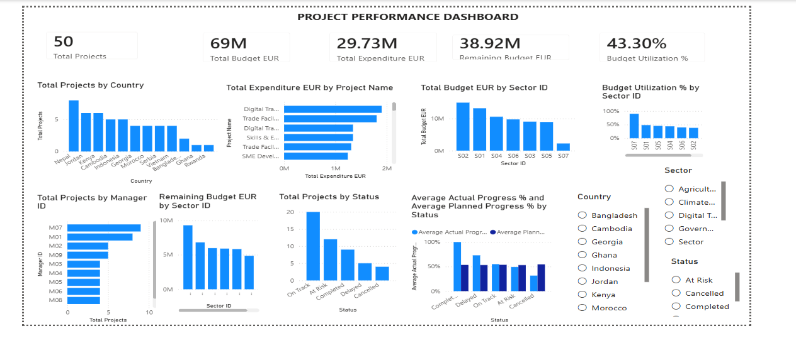
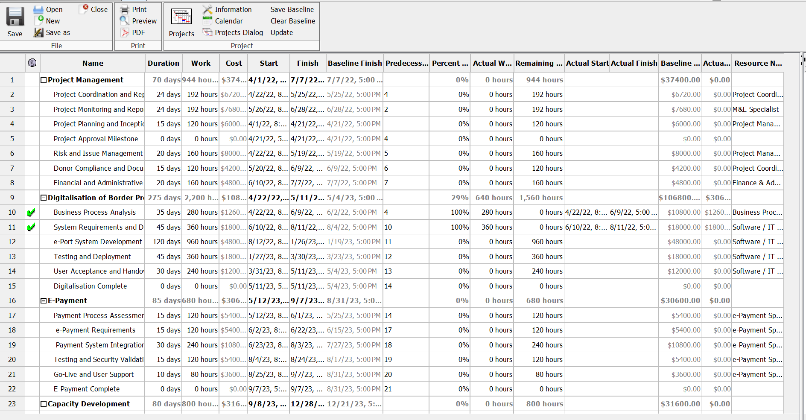
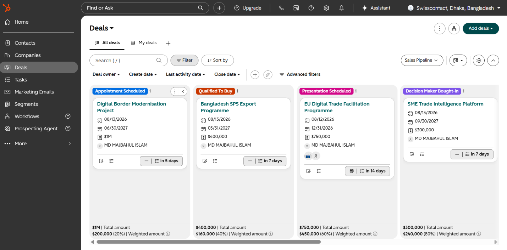

Power BI — Project Performance Dashboard
Interactive management dashboard developed to structure project performance information, monitor key indicators and support evidence-based reporting and decision-making.
International development and project management professional with 8+ years of experience across international trade, business strategy, digital transformation, economic analysis, and donor-funded programmes.
I work at the intersection of trade, business, development, data and technology — turning complex challenges into practical strategies, well-managed projects and evidence-based solutions.
I am an international development and project management professional with 8+ years of experience working across international trade, business development, economic research, digital transformation and donor-funded programmes.
My professional experience spans trade facilitation, market access, SPS compliance, value chain development, digitalisation of border procedures, SME development and programme implementation. I have worked with public institutions, development partners, international organisations and private-sector stakeholders in complex multi-stakeholder environments.
I combine project management and business strategy with economic analysis and data-driven decision-making. My approach focuses on translating evidence and stakeholder needs into practical strategies, measurable results and sustainable solutions.
Currently, my interests include international trade, digital transformation, economic analysis, trade and environmental policy, business strategy and technology-enabled development.
International trade policy, trade facilitation, market access, trade intelligence, SPS compliance, value chains and export competitiveness.
Business strategy, SME development, market research, business development, stakeholder engagement and evidence-based decision-making.
End-to-end project delivery, programme implementation, results management, monitoring, risk management, donor reporting and multi-stakeholder coordination.
Digital transformation initiatives, technology-enabled process improvement, digitalisation of trade and border procedures, and business technology projects.
Applied economic research, international economics, econometrics, policy analysis, impact evaluation and research on trade, competitiveness and development.
Data analysis and visualisation for research, project performance and decision-making using Python, Stata, Power BI, Excel and international trade databases.
CY Cergy Paris Université & ESSEC Business School · 2025–2026
Advanced training in economic theory, econometrics, mathematical economics and programming for economic data analysis, with a focus on empirical economic research.
University of Dhaka
Graduate-level training in economics with academic interests spanning international economics, development economics and research methodology.
University of Dhaka
Undergraduate foundation in economic theory, applied economics, quantitative analysis and policy-oriented economic studies.
National Board of Trade (NBT), Sweden
Professional training in international trade policy, trade negotiations, market access and the practical application of trade-policy frameworks.
Project Management Institute (PMI)
Professional certification supporting structured project delivery, stakeholder management, risk management, planning, monitoring and performance management.
Ongoing development in digital transformation, Agile project management, data analytics, business intelligence, AI-enabled workflows and technology for international trade and development.
Practical projects demonstrating project management, business analytics, digital transformation and technology-enabled decision support.

Interactive management dashboard developed to structure project performance information, monitor key indicators and support evidence-based reporting and decision-making.

Project planning and scheduling exercise covering activities, dependencies, timelines, resources and project monitoring using Microsoft Project.
Applied project management practices combining planning, stakeholder coordination, performance monitoring, risk management and digital tools to support complex initiatives.

CRM workflow project demonstrating opportunity pipeline management, activity tracking, reporting and structured customer relationship management.
More than eight years of experience delivering donor-funded, international trade, development, digital transformation and project management initiatives across public, private and international development environments.
Managed and supported multi-stakeholder development projects covering digitalisation, trade facilitation, private-sector development, standards and compliance, and value-chain development.
Led and contributed to research, policy analysis, trade-related studies, capacity development and stakeholder engagement under the Ministry of Commerce, Government of Bangladesh.
Experience working across government institutions, international organisations, development partners and private-sector stakeholders on trade, development effectiveness, project performance and evidence-based decision-making.
Applied research connecting international trade, environmental economics, carbon pricing, competitiveness and evidence-based economic analysis.
Evidence from selected emerging and developing economies exporting to the European Union (EU).
The research examines how rising European Union carbon prices may affect export competitiveness, with particular attention to carbon exposure, trade performance and the implications of evolving EU climate policy for exporting economies.
Research experience combining economic theory, econometrics, trade data and statistical programming to investigate policy-relevant economic questions.
Research interests include international trade, trade and environmental policy, carbon pricing, EU trade policy, development economics, digitalisation and export competitiveness.
Experience working with international trade and economic datasets and translating quantitative evidence into interpretable findings for research, policy and decision-making.
A combination of professional certifications, specialised trade policy training and continuous development in project management, analytics, digital tools and emerging technologies.
PMI-certified project management professional with experience applying structured approaches to project planning, execution, monitoring, stakeholder coordination, risk management and delivery.
Advanced trade policy training from the National Board of Trade (NBT), Sweden, strengthening expertise in international trade, trade policy analysis and the institutional dimensions of global commerce.
Continuous hands-on development in modern project and business tools, including Jira, Microsoft Project, Power BI, HubSpot CRM, Microsoft 365 and advanced Excel.
Continued development of quantitative and analytical capabilities for economic research, project performance analysis, trade intelligence and evidence-based decision-making.
Ongoing learning focused on artificial intelligence, digital transformation, AI-enabled project management and technology applications for international trade and business decision support.
Practical support for organisations working across international trade, project delivery, business strategy, digital transformation and data.
Trade research, market assessment, export strategy, market-entry analysis and evidence-based support for international business.
Project planning, implementation, monitoring, stakeholder coordination, results frameworks, reporting and delivery support for complex programmes.
Business intelligence, KPI development, dashboards, economic analysis and data-driven insights to support management decisions.
Technology-enabled process improvement, digital project coordination, workflow design and practical transformation support.
Applied economic research, trade policy analysis, quantitative methods, econometric analysis and evidence-based policy research.
Research-based training, workshop facilitation, technical presentations and advisory support for trade, development and project management.
Open to opportunities and professional collaborations in international development, project management, trade, economic research, policy analysis and related areas.